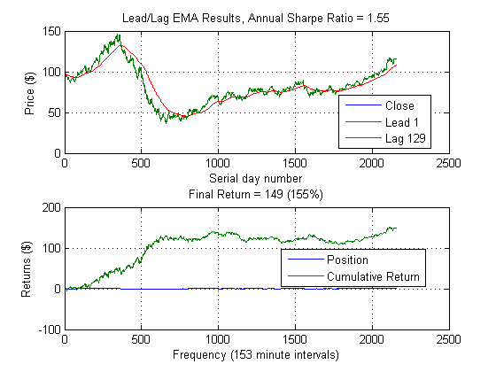
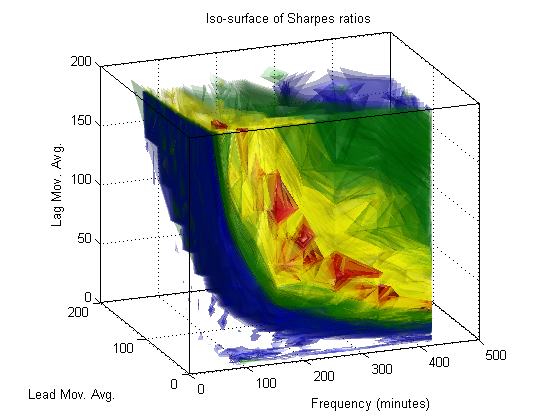

Algorithmic Trading with MATLAB: Intraday trading
This demo expands on the previous demo to incorporate a larger, intraday trading set (loaded from a database). More data implies more calculations, so we use Parallel Computing Toolbox to accelerate the analysis.
Copyright 2010-2012, The MathWorks, Inc. All rights reserved.
Contents
Load intraday data from a database
Our large, intraday data set is stored in a database instead of in an Excel spreadsheet. MATLAB can read in data from these data sources thanks to Database Toolbox.
% Rather than forcing the customer to define and populate a database, we % will instead read from a prepared data file. If you wish, you may write % the data from this file to a database of your choosing and adapt the % GETMINUTEDATAFROMDB command to connect to and read from it. % LCO = getMinuteDataFromDB('LCO'); load oilData LCO = double(brent); clearvars -except LCO LCOClose = LCO(:,4); cost = 0.01; % Bid/ask spread
Open a parallel computing environment
We will be performing many more backtests on a larger data set than before, so we would like to take advantage of as many processors as we can in order to speed up the computation. MATLAB's Parallel Computing Toolbox makes this straightforward. First, we open a pool of parallel workers:
% Use all the cores on my laptop if matlabpool('size') == 0 matlabpool local end % Then we use MATLAB's |parfor| construct to parallelize our |for|-loops: edit leadlagFun
Perform the parameter sweep
We will sweep not just across many combinations of leading and lagging averages, but we will furthermore sweep across many different granularities of data in an effort to find the 'best' frequency to use. The variable 'ts' below is the sampling time and varies from 1 minute up to 420 minutes (i.e.: about 1 trading day)
seq = generateSpacedInts(1, 200, 25);
ts = generateSpacedInts(1, 420, 25);
range = {seq,seq,ts};
annualScaling = sqrt(250*7*60);
llfun =@(x) leadlagFun(x,LCOClose,annualScaling,cost);
tic
[~,param,sh,xyz] = parameterSweep(llfun,range);
toc
leadlag(LCOClose(1:param(3):end),param(1),param(2),...
sqrt(annualScaling^2/param(3)),cost)
xlabel(['Frequency (',num2str(param(3)),' minute intervals)'])
Elapsed time is 39.793099 seconds.
Plot iso-surface
Before, we used a surface plot to show how the Sharpe ratio depended on the two underlying parameters. Now that we have three parameters, we will plot an iso-surface, a 3D volume plot where color indicates the Sharpe ratio.
figure isoplot(xyz, sh)